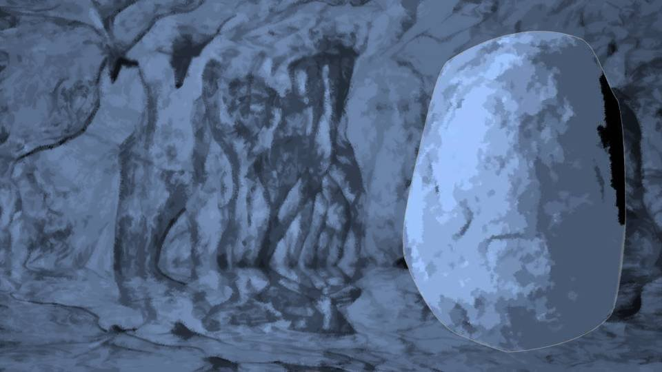

Script 00002473
母さんとのやり取りをサクラが聞いていたかどうかは知らない。
しかしサクラ、いや死月妖花は人間の力を見くびっている。
今さら俺に何かできるかなんて思っていないだろう。
しかしサクラ、いや死月妖花は人間の力を見くびっている。
今さら俺に何かできるかなんて思っていないだろう。

俺の後ろには、なつみちゃん、春花ちゃん、五島ちゃん、そして夏菜がいる。
奥の方へ案内するのは、住人たちの襲撃から守るという名目だ。
奥の方へ案内するのは、住人たちの襲撃から守るという名目だ。
先ほど母さんと話したこと――それが俺の心にわずかな変化を起こしていた。
やられっぱなしで悔しくないのかと。
その言葉が、俺の中でずっと響き続けていた。
やられっぱなしで悔しくないのかと。
その言葉が、俺の中でずっと響き続けていた。
今の状況を整理する。
奥にはサクラがいるが、最初は身を隠しているだろう。
そしてなつみちゃん以外を気絶させるか殺したところで登場し、なつみちゃんに神使になるよう働きかける。
さらに俺がドローガを使えば、全ての神使が揃うのだ。
死月妖花の計画ではそうなっている。
奥にはサクラがいるが、最初は身を隠しているだろう。
そしてなつみちゃん以外を気絶させるか殺したところで登場し、なつみちゃんに神使になるよう働きかける。
さらに俺がドローガを使えば、全ての神使が揃うのだ。
死月妖花の計画ではそうなっている。
もしそうなったらどうなるだろうか。
死月妖花は弱点のない半永久的に繁栄する生物になるだろう。
そもそも死月妖花の弱点が何なのかは知らないが、いずれにせよ死月妖花はそれを望んでいる。
もし、俺がここで死月妖花を裏切ったら――。
死月妖花は弱点のない半永久的に繁栄する生物になるだろう。
そもそも死月妖花の弱点が何なのかは知らないが、いずれにせよ死月妖花はそれを望んでいる。
もし、俺がここで死月妖花を裏切ったら――。

結果は同じだ。
もう住人たちもここまで動いてしまったんだ。
今までのように平和な集落ではいられない。
それに乗じて、ここにいるみんなを呪殺することになるだろう。
もう住人たちもここまで動いてしまったんだ。
今までのように平和な集落ではいられない。
それに乗じて、ここにいるみんなを呪殺することになるだろう。
いや……1つだけ希望がある。

城崎さんだ。
本当に城崎さんが警察を呼んでいるなら、いずれ到着するはずだ。
そのような公的機関の人間が何人もここへ来るとなったら、死月妖花としても派手には動けないはず。
死月妖花はその存在が公になることを恐れているからだ。
本当に城崎さんが警察を呼んでいるなら、いずれ到着するはずだ。
そのような公的機関の人間が何人もここへ来るとなったら、死月妖花としても派手には動けないはず。
死月妖花はその存在が公になることを恐れているからだ。
そもそも住人たちの体内には、すでにドローガがある。
みんなが逮捕されて薬物検査でもされたら、死月妖花としてもかなり脅威になる。
いや、そうなったらおそらく栄一郎が死んだ時の様に、国がその事件をもみ消すだろう。
みんなが逮捕されて薬物検査でもされたら、死月妖花としてもかなり脅威になる。
いや、そうなったらおそらく栄一郎が死んだ時の様に、国がその事件をもみ消すだろう。
荒田にいる全員が殺される可能性はあるだろうか。
神使が直接殺すなら、死体すら残らないように処分されるだろう。
警察が来たとしても、死体さえなければ一時的にごまかすことはできる。
しかし集落の人間が全員いなくなったとすれば、かなり事態は重くなる。
神使が直接殺すなら、死体すら残らないように処分されるだろう。
警察が来たとしても、死体さえなければ一時的にごまかすことはできる。
しかし集落の人間が全員いなくなったとすれば、かなり事態は重くなる。

このように、死月妖花はどう出るか、以上の2つの可能性が考えられる。
全員を殺すのか、ドローガを使った住人たちを野放しにするのか。
俺が死月妖花なら野放しを選ぶだろう。
ドローガを使っただけなら、事件は国がもみ消してくれるはず。
仮に集落の存在を国が重く見たとしても、全員を殺すよりは時間稼ぎができる。
全員を殺すのか、ドローガを使った住人たちを野放しにするのか。
俺が死月妖花なら野放しを選ぶだろう。
ドローガを使っただけなら、事件は国がもみ消してくれるはず。
仮に集落の存在を国が重く見たとしても、全員を殺すよりは時間稼ぎができる。
つまり――

俺がすべきことは――。

「幸太郎さん、どこに通路があるんだ？ 行き止まりみたいだけど……」
春花ちゃんが不思議そうに辺りを見渡す。
ヴェルジのミイラが保存されている場所を通って糸姫山の頂上へ行くことができるが……。
春花ちゃんが不思議そうに辺りを見渡す。
ヴェルジのミイラが保存されている場所を通って糸姫山の頂上へ行くことができるが……。

それは危険だ。
なぜなら、ヴェルジのミイラのありかが死月妖花に知られてしまうからだ。
今この瞬間も、サクラがどこかで見ているはず。
なぜなら、ヴェルジのミイラのありかが死月妖花に知られてしまうからだ。
今この瞬間も、サクラがどこかで見ているはず。
「そりゃそうだよ、ここで行き止まりだ」
「おい、何言ってんだよ……」
「おい、何言ってんだよ……」

「幸太郎さん、先輩たちをどうするつもりですか？」
「くっふふふ……。さすが天才少女、ってとこかな？」
まずはここでサクラを騙す。
そのためにはここにいる全員を騙さなければならない。
俺はあくまでもサクラと死月妖花の言いなりになっている愚か者だ。
まずはここでサクラを騙す。
そのためにはここにいる全員を騙さなければならない。
俺はあくまでもサクラと死月妖花の言いなりになっている愚か者だ。

「幸太郎さん……どういうことだよ」
「どうって……必要なんだよ、なつみちゃんがね」
俺は鉈を握りしめ、4人に歩み寄る。
「どうって……必要なんだよ、なつみちゃんがね」
俺は鉈を握りしめ、4人に歩み寄る。
「いやいや、一時はどうなることかと思ったよ……。
朝食の時に五島ちゃんに問い詰められた時は、さすがに焦ったかな。
でも、何とか君らをここまで誘導できた」

「パパ！ 何言ってるの！？」

「おいおい夏菜……。パパに何をする気だ？」
「パパがママを殺したの……？」
「だったらどうするんだ？」
「パパはいつも言ってた……。 ママを殺した犯人を見つけたら、同じ目に遭わせなさいって……！」
「パパがママを殺したの……？」
「だったらどうするんだ？」
「パパはいつも言ってた……。 ママを殺した犯人を見つけたら、同じ目に遭わせなさいって……！」
「幸太郎さん、ここまで来たら話してくれますよね？
どうやって呪殺事件を成立させたんですか？ 絶対に共犯者がいるはずです」
「難しく考えすぎだよ。ただ単に、みんな俺までたどり着けなかっただけ。 俺がみんなをやったんだよ……！」
「難しく考えすぎだよ。ただ単に、みんな俺までたどり着けなかっただけ。 俺がみんなをやったんだよ……！」

「嘘だ！ そんなの絶対に無理です！ 絶対に共犯者がいたはずです！」
「五島ちゃん……君の頭は認めるよ？ だけど、これが現実。 初めから俺のこと、疑っていたんだろ？ だったらそれでいいじゃないか……」
「五島ちゃん……君の頭は認めるよ？ だけど、これが現実。 初めから俺のこと、疑っていたんだろ？ だったらそれでいいじゃないか……」
「幸太郎さん……あなた……誰をかばっているんですか？」
この真相を知られるわけにはいかない。
「誰をかばっているのか？」という問いに敢えて答えるなら、君たち全員ということになる。
「すべては死月妖花の仕業だ」 なんてここで言えたらどれほど楽か。
この真相を知られるわけにはいかない。
「誰をかばっているのか？」という問いに敢えて答えるなら、君たち全員ということになる。
「すべては死月妖花の仕業だ」 なんてここで言えたらどれほど楽か。
「パパ！ エリ姉たちを殺すなら、私がパパを止める！ パパを殺さなくても、止めることはできるもん！」
「夏菜……お前は確かに強いよ。でも、さっきのあいつらに勝てるか？」
「夏菜……お前は確かに強いよ。でも、さっきのあいつらに勝てるか？」

俺はここでドローガを使う。
夏菜の動きを封じなければならない。
ドローガによる感染もファルシフィカソがあれば何とかなる。
夏菜の動きを封じなければならない。
ドローガによる感染もファルシフィカソがあれば何とかなる。
なるほど、確かに身体の奥底から力がみなぎってくる感覚。
これでとりあえず俺が自ら生きた第一世代になる意思を見せつけることはできた。
これでとりあえず俺が自ら生きた第一世代になる意思を見せつけることはできた。
「へえ、やっぱりすごいなあ！ 俺みたいなデブでも夏菜より速く動けるぞ！ 夏菜は少し、お昼寝してなさいね」
今のは野生の鹿を気絶させる方法だ。
荒田の人間であればみんなできることだが、これなら夏菜に大けがを負わせずに済む。
今のは野生の鹿を気絶させる方法だ。
荒田の人間であればみんなできることだが、これなら夏菜に大けがを負わせずに済む。
「逃げるぞ！」
「おっと」
「おっと」

「はっはっは！ こりゃすごい！ まるで人形のように軽いぞ！」
「食らえ！ このクソブタ野郎！」
「痛くないねえ。ドローガには強力な鎮痛作用もあるそうだ。はあ……本当にいい気分だよ！」
「この野郎……！」
「食らえ！ このクソブタ野郎！」
「痛くないねえ。ドローガには強力な鎮痛作用もあるそうだ。はあ……本当にいい気分だよ！」
「この野郎……！」

 video: 石.wmv
video: 石.wmv「ぐあ……！」
「はっはー！ 痛い？ 痛いよね」
「うっぐ……」
「はっはー！ 痛い？ 痛いよね」
「うっぐ……」
今のは時間稼ぎだ。
ちらっと五島ちゃんの方に目を向ける。
何やら手に金属片のようなものを握っているのが見える。
あれはなんだ？
あり得るとすれば――。
ちらっと五島ちゃんの方に目を向ける。
何やら手に金属片のようなものを握っているのが見える。
あれはなんだ？
あり得るとすれば――。
そうか、鍵か。
さっき鉄格子の鍵が五島ちゃんの手にも渡ったはず。
となれば、鍵をすり替えたのだろうか。
よし、これなら隙を見て逃げることもできるだろう。
さっき鉄格子の鍵が五島ちゃんの手にも渡ったはず。
となれば、鍵をすり替えたのだろうか。
よし、これなら隙を見て逃げることもできるだろう。
地上にいる住人たちの身体もそろそろ限界に近いはずだ。
後はこのまま、みんなが逃げてくれたら何とかなるだろう。
サクラ、見ているか？
俺はお前に言われたように振る舞っているつもりだ。
後はこのまま、みんなが逃げてくれたら何とかなるだろう。
サクラ、見ているか？
俺はお前に言われたように振る舞っているつもりだ。
母さんの平手打ち――
それが俺の目を覚まさせた。
荒田のために命をかけろと。
俺の妻であるサクラは10年前に死んだのだ。
さっきまで現れたサクラらしき何者かは、サクラの形をした 躯 ―― 人形に過ぎない。
俺のお人形遊びも、もうこれまでだ。
荒田のために命をかけろと。
俺の妻であるサクラは10年前に死んだのだ。
さっきまで現れたサクラらしき何者かは、サクラの形をした 躯 ―― 人形に過ぎない。
俺のお人形遊びも、もうこれまでだ。
「さあそろそろ死んでくれよ！ かわいい姪っ子よ！」

振り下ろした鉈が地面に突き刺さる。
さすがに本当に殺すわけにはいかない。
さすがに本当に殺すわけにはいかない。


「あーあ、せっかく研いだのに、これじゃ刃こぼれしたな。
まあ、叩き潰せばいいか」

と、五島ちゃんががちゃがちゃと扉の鍵をいじっている。
よし、そろそろいいだろう。
隙を見せて4人を逃がす。
よし、そろそろいいだろう。
隙を見せて4人を逃がす。
死月妖花の目には、俺はまるで遊んでいるようにも見えるだろう。
ドローガの効果を実感し、高揚してこのように余裕のある態度を取る人間を演出している。
しかし死月妖花がそんなことを望むはずがない。
ちょっとでも違和感を持たせると裏切ったと思われるだろう。
ドローガの効果を実感し、高揚してこのように余裕のある態度を取る人間を演出している。
しかし死月妖花がそんなことを望むはずがない。
ちょっとでも違和感を持たせると裏切ったと思われるだろう。
――幸太郎、何をしているの？
突如俺の耳に、聞きなれた声が飛び込んでくる。
サクラの声か？
サクラの声か？
――いつまで遊んでいるの？ それとも、私たちを裏切る気？
なぜだ？ なぜ俺にこのような声が聞こえる？
死月妖花の声が届くのは第二世代と第三世代のはず。
俺は第一世代だから死月妖花の声が聞こえるはずが……。
なぜだ？ なぜ俺にこのような声が聞こえる？
死月妖花の声が届くのは第二世代と第三世代のはず。
俺は第一世代だから死月妖花の声が聞こえるはずが……。
一瞬だけ岩壁に目を遣る。

――！！
封石がどかされている！？
あの奥にはヴェルジのミイラが……！
封石がどかされている！？
あの奥にはヴェルジのミイラが……！
何てことだ……
俺はまだ死月妖花がミイラの場所を知らないと思っていた。
しかしあのミイラを切り札として用意していたのだ。
つまり、今ミイラの胞子が俺の体内に入り込んで…… 俺は第四世代になろうとしている。
だから死月妖花の声が届く。
しかしあのミイラを切り札として用意していたのだ。
つまり、今ミイラの胞子が俺の体内に入り込んで…… 俺は第四世代になろうとしている。
だから死月妖花の声が届く。
――さあ、早くしないとなつみちゃんにも胞子が届いて第四世代になってしまうわ。
すぐにやるか、なつみちゃんを第四世代にするか。
好きな方を選んでいいわよ？
どのみち、なつみちゃんはこのまま神使になるんだから。
なつみちゃんが第四世代になれば、私が説得するまでもないわね。
すぐにやるか、なつみちゃんを第四世代にするか。
好きな方を選んでいいわよ？
どのみち、なつみちゃんはこのまま神使になるんだから。
なつみちゃんが第四世代になれば、私が説得するまでもないわね。
幸太郎、もしここでみんなに真実を話してみなさい？
そうなったらさすがに静観しているわけにはいかない。
ここにいる全員を0.1秒で皆殺しにするわ。
そうなったらさすがに静観しているわけにはいかない。
ここにいる全員を0.1秒で皆殺しにするわ。

「なつみ、下がれ！ あいつの狙いはお前みたいだ！」
春花ちゃんのその声で我に返る。
そうだ、こんなことであきらめるな！
俺が第四世代になり始めているとはいえ、人間としての理性を失うにはまだ何日もかかるはずだ。
春花ちゃんのその声で我に返る。
そうだ、こんなことであきらめるな！
俺が第四世代になり始めているとはいえ、人間としての理性を失うにはまだ何日もかかるはずだ。
「おや？ 春花ちゃん俺と1人で戦うつもり？
荒田の女性はほんとに勇敢だよねえ。でも、俺は遊ぶつもりはないよ？
あ、でも春花ちゃんは荒田の人間じゃないのか。すごいねえ。妹を守るためかな？」
「な、何言ってるんだよ……！」
「な、何言ってるんだよ……！」
「あれ？ まだ聞いてない？ 春花ちゃんは養子なんだよ。
本当は古郡家の娘で、なつみちゃんの実の姉」
「そ、そんな！」
このような秘密を暴露することで、俺は本気で4人を殺す、あるいは捕まえる気があるのだと思わせる。
次はどう振る舞うべきか。
もう一度攻撃し、それも外した方がいいだろう。
「そ、そんな！」
このような秘密を暴露することで、俺は本気で4人を殺す、あるいは捕まえる気があるのだと思わせる。
次はどう振る舞うべきか。
もう一度攻撃し、それも外した方がいいだろう。
しかし2度3度と攻撃を外すわけにはいかない。
これを最後の攻撃とするためには、俺が攻撃できない状況にしなければならない。
ならば……渾身の力で地面をたたきつけ、俺の腕を負傷させる。
これを最後の攻撃とするためには、俺が攻撃できない状況にしなければならない。
ならば……渾身の力で地面をたたきつけ、俺の腕を負傷させる。
こうすることで俺はさらに攻撃を加えることが難しくなる。
その隙に逃げてもらうしかない。
いくらドローガで多少高揚しているとはいえ、自分の腕を自ら壊すなんてかなりの勇気がいる。
しかしこのままでは集落が滅びるのみ。
その隙に逃げてもらうしかない。
いくらドローガで多少高揚しているとはいえ、自分の腕を自ら壊すなんてかなりの勇気がいる。
しかしこのままでは集落が滅びるのみ。
母さん、俺はやれることを全力でやる。
この程度じゃ贖罪にもならないのは百も承知。
だけど…… このままで終われるかよ！
人間様をなめるなキノコめ！
この程度じゃ贖罪にもならないのは百も承知。
だけど…… このままで終われるかよ！
人間様をなめるなキノコめ！
「な、なつみが妹だろうが、私が誰であろうがどうだっていい！ 絶対になつみたちを守る……！」
「ははー怖い顔だねえ。まったく、うっとうしいガキだ！」
「ははー怖い顔だねえ。まったく、うっとうしいガキだ！」
 video: 鉈火花.wmv
video: 鉈火花.wmv
俺を思いきり腕を振り上げ、渾身の力で鉈を振り下ろす。
春花ちゃんの身体に当たらないギリギリの距離で振り下ろし、地面をたたく。
鉈が折れるか、俺の腕が折れるか――。
春花ちゃんの身体に当たらないギリギリの距離で振り下ろし、地面をたたく。
鉈が折れるか、俺の腕が折れるか――。
…………！！
その時、春花ちゃんの前に飛び出す人影。
それは……
それは……

夏菜の次に死なれては困るなつみちゃんだった。
彼女が死んでしまえば生きた第二世代はいなくなる。
もちろん俺、あるいは住人の誰かの血を他の人に浴びせれば第二世代は出来上がる。
彼女が死んでしまえば生きた第二世代はいなくなる。
もちろん俺、あるいは住人の誰かの血を他の人に浴びせれば第二世代は出来上がる。
しかし、血を浴びせるなんて不自然な行動は極力避けるべきだ。
俺は振り下ろされている鉈を止めようとしたが、それでも大きな刃はまっすぐなつみちゃんに向かっていった。
これでは致命傷どころでは済まない……！
俺は振り下ろされている鉈を止めようとしたが、それでも大きな刃はまっすぐなつみちゃんに向かっていった。
これでは致命傷どころでは済まない……！
「くそ……！ 君が死んだらダメじゃないか！」
だが今の手ごたえ……。
懐に何か固いものを入れていたのか？
先ほどの勢いなら身体がざっくりと裂けても不思議ではないはず。
だが今の手ごたえ……。
懐に何か固いものを入れていたのか？
先ほどの勢いなら身体がざっくりと裂けても不思議ではないはず。

「先輩！ 早くこっちに！」
「よ、よし！」
声の方を見ると、五島ちゃんが扉を抜けていた。
もうここまで来たら流れに乗るしかない。
考えるよりも、とにかく時間を稼ぐんだ！
「よ、よし！」
声の方を見ると、五島ちゃんが扉を抜けていた。
もうここまで来たら流れに乗るしかない。
考えるよりも、とにかく時間を稼ぐんだ！
「ま、待ちやがれ！」
動揺しているそぶりを見せているうちに、扉に鍵がかけられた。
「くそ！ どうしてだ！ 鍵は俺が……！ このガキ！ すり替えやがったな！」
と、
「くそ！ どうしてだ！ 鍵は俺が……！ このガキ！ すり替えやがったな！」
と、
「お前たち、聞こえるか！？ もう大丈夫だ！」
母さんの声か。
どうやら住人たちがみんなダウンしたようだ。
母さんもやるべきことをやってくれた。
後は俺次第だ……！
母さんの声か。
どうやら住人たちがみんなダウンしたようだ。
母さんもやるべきことをやってくれた。
後は俺次第だ……！
「待ちやがれ！ こんな扉、ぶっ壊してやる！」
とにかく狂乱したかのように鉈で扉を叩く。
いくらドローガを使ったとは言え、鉈で金属製の扉はそう簡単には壊せない。
とにかく狂乱したかのように鉈で扉を叩く。
いくらドローガを使ったとは言え、鉈で金属製の扉はそう簡単には壊せない。
「おいやめろって！ 落盤が起こるぞ！」
「黙れ黙れ黙れ！」
「黙れ黙れ黙れ！」

俺に重いものがのしかかる。
何だこれは……。
まさか、新村本家の桜の木か……？
何だこれは……。
まさか、新村本家の桜の木か……？
「よう兄貴」
洞窟内に響いているのか、それとも耳元でささやかれているのか――。
それすらも分からないような声。
だがこの声は……。
洞窟内に響いているのか、それとも耳元でささやかれているのか――。
それすらも分からないような声。
だがこの声は……。

「全く……やらかしてくれたなあ」
やっぱり栄一郎か……！
やっぱり栄一郎か……！

木からは触手のように菌糸が伸び、俺の腕と足を抑えつける。
ドローガで筋力が上がったはずなのにびくともしない。
ドローガで筋力が上がったはずなのにびくともしない。
「ぐ……！ くそ！ やめろ栄一郎！ 離せ……！」
「やっぱり、兄貴じゃこんなもんか。 あーあ、人間をスパイにする計画もうまくいかなかったな」
「やっぱり、兄貴じゃこんなもんか。 あーあ、人間をスパイにする計画もうまくいかなかったな」

「まあ、仕方ないわよ。人間って心がぶれるんだもの。あとは私たちがやるしかないわね」
「そうだね。どのみちこの集落から人間はいなくなった方がいい」
「そうだね。どのみちこの集落から人間はいなくなった方がいい」
「ぐ……！ くそ……！」
「さあ栄一郎、警察が来る前に全員片付けましょう」
「や、やめろ……！」
ダメだ！ すぐにここから全員を逃がさないと！
「さあ栄一郎、警察が来る前に全員片付けましょう」
「や、やめろ……！」
ダメだ！ すぐにここから全員を逃がさないと！
「五島は夏菜を運んでくれ！」
「は、はい！」
「ばあちゃん！ なつみと夏菜を引き上げてくれ！ 急いで！」
一方で向こうからそんな声が響いてくる。
「は、はい！」
「ばあちゃん！ なつみと夏菜を引き上げてくれ！ 急いで！」
一方で向こうからそんな声が響いてくる。
「お、おい……春花ちゃん……
待て……
待てよ……！」
行かないでくれ！ 早くここから逃げないと……！
早く逃げるように言わないと……！
行かないでくれ！ 早くここから逃げないと……！
早く逃げるように言わないと……！
「くっそおおお！！！ 待て……！ 待てよおお！！」
可能な限りの大声を上げる。
しかしみんな俺の声を無視し、地上へ上がってしまった。
可能な限りの大声を上げる。
しかしみんな俺の声を無視し、地上へ上がってしまった。
「待てよ……ちくしょう……」
「あらあら幸太郎、愛する妻を裏切るのかしら？」
「だ、黙れこの化け物め！ 裏切り者はお前だ！」
「バッカみたい……。 私が女神様のご意思のままに動いているって知ってたくせに」
「あらあら幸太郎、愛する妻を裏切るのかしら？」
「だ、黙れこの化け物め！ 裏切り者はお前だ！」
「バッカみたい……。 私が女神様のご意思のままに動いているって知ってたくせに」
「兄貴はやがて第四世代としてその肉体は女神様のものになる。そう言っていられるのも今のうちさ」
「ぐ……！ どうする気だ……！」
「簡単な話よ。皆殺しにするの」
「そしてなつみちゃんを捕まえ、第一世代になった兄貴とで女神様を完全な存在に――」
「ぐ……！ どうする気だ……！」
「簡単な話よ。皆殺しにするの」
「そしてなつみちゃんを捕まえ、第一世代になった兄貴とで女神様を完全な存在に――」
「ふざけるな！ 俺は何があっても絶対に神使になんかならない！」
「あらあら、困ったわねえ。 だったらこうしましょう、幸太郎が神使になってくれたら、皆の命は助けるわ」
「もうそんなことで騙されない！」
「兄貴も頭が悪いなあ。神使にするのはドローガを使った住人の1人でもいいんだぞ？ 大人しく僕たちに従った方がいいと思うけどなあ」
「あらあら、困ったわねえ。 だったらこうしましょう、幸太郎が神使になってくれたら、皆の命は助けるわ」
「もうそんなことで騙されない！」
「兄貴も頭が悪いなあ。神使にするのはドローガを使った住人の1人でもいいんだぞ？ 大人しく僕たちに従った方がいいと思うけどなあ」
「お前らの言う通りにしていいことなんか何もなかった！」
「幸太郎…… 死んだ私と会えて喜んでいたのに、それもいいことじゃなかったの？」
「うるさい！」
「じゃあ、地上のみんなは皆殺しだ。兄貴のせいでみんな死ぬんだよ」
「そうやって俺の心をえぐろうったって……！」
「幸太郎…… 死んだ私と会えて喜んでいたのに、それもいいことじゃなかったの？」
「うるさい！」
「じゃあ、地上のみんなは皆殺しだ。兄貴のせいでみんな死ぬんだよ」
「そうやって俺の心をえぐろうったって……！」
「ほんとバカだなあ兄貴は。10年間も黙っていた時点で、兄貴にも責任があるんだよ？」
「だから俺はもう、これ以上間違いは犯さない！」
「ふむ……今日の兄貴は意外と頑固だな……。 本当に地上のみんなを殺すと、それはそれで面倒だしなあ」
「でも早くしないと警察が来るわよ？ もしこのことが公に知れたら……」
「だから俺はもう、これ以上間違いは犯さない！」
「ふむ……今日の兄貴は意外と頑固だな……。 本当に地上のみんなを殺すと、それはそれで面倒だしなあ」
「でも早くしないと警察が来るわよ？ もしこのことが公に知れたら……」
「いや、待ってくれ。俺にいい案がある」
「何かしら？」
「また近いうちになつみちゃんがここに来るだろう。 5月の連休か夏休みにさ」
「なるほど、春花も一緒に来るはずよね？」
「何かしら？」
「また近いうちになつみちゃんがここに来るだろう。 5月の連休か夏休みにさ」
「なるほど、春花も一緒に来るはずよね？」
「な、何を言っている……！」
「あら、幸太郎は気づかなかった？ 春花になつみちゃんの血がかかったのよ？」
「何！？」
「そう、春花は今、第三世代になった。 春花が初潮を迎えるか、荒田に来た時に流血させればなつみちゃんを殺すことになるだろうさ」
「あら、幸太郎は気づかなかった？ 春花になつみちゃんの血がかかったのよ？」
「何！？」
「そう、春花は今、第三世代になった。 春花が初潮を迎えるか、荒田に来た時に流血させればなつみちゃんを殺すことになるだろうさ」
「幸太郎に、女神様のもう1つの願いを教えてあげるわ。
それはね、
春花を消すことよ？」
「どういうことだ……！？」
「女神様は春花が大嫌いなのさ。女神様は嫉妬深いんだ」
一体何を言っているんだ？
死月妖花と春花ちゃんに一体何の関係が……？
「どういうことだ……！？」
「女神様は春花が大嫌いなのさ。女神様は嫉妬深いんだ」
一体何を言っているんだ？
死月妖花と春花ちゃんに一体何の関係が……？
「まあ、焦って神使を探す必要はない。そんなの時間さえかければいつでも仕立てられる。
死んだ人間が神使でいられるのはせいぜい20年程度。つまり僕の肉体が衰える8年以内に神使が見つかればいい」
「ここと元木町が完全につながったのはつい昨夜のことだからね。本格的な神使探しはこれからでもいいの」
「まあせっかくの機会だ。春花には女神様が納得するまで苦しんでもらおう。 春花が死ぬ程度じゃ女神様は満足なさらない」
「ここと元木町が完全につながったのはつい昨夜のことだからね。本格的な神使探しはこれからでもいいの」
「まあせっかくの機会だ。春花には女神様が納得するまで苦しんでもらおう。 春花が死ぬ程度じゃ女神様は満足なさらない」
「女神様ってのは……大昔にここにやってきたという娘か……？」
「そうね、確かに彼女―― 糸姫も女神様の1人ってことにはなるわ。 でも糸姫はもう、この状況に我慢できないみたいなの」
「そうね、確かに彼女―― 糸姫も女神様の1人ってことにはなるわ。 でも糸姫はもう、この状況に我慢できないみたいなの」
「昨夜色々と糸姫の意思も確認したんだけどねえ……。
でもやっぱりダメだ。800年経っても、糸姫はただの下賤の娘。女神にはふさわしくないと判断した」
「だからもう糸姫はどうでもいいの。これからは新しい女神様が私たちの主。 糸姫はせいぜい、情報を漏らさないようにここで捕縛しておくわ」
「だからもう糸姫はどうでもいいの。これからは新しい女神様が私たちの主。 糸姫はせいぜい、情報を漏らさないようにここで捕縛しておくわ」
「い……一体誰なんだ……？ 新しい女神様ってのは……」
「あれ？ 兄貴は本当にバカになったのかな？ 兄貴ならすぐに分かると思ったんだけどなあ。 荒田と元木の血を引いた女神様だよ？」
「女神様の本当の願いをかなえるなら、今地上にいる人たちを殺すわけにはいかないの」
「あれ？ 兄貴は本当にバカになったのかな？ 兄貴ならすぐに分かると思ったんだけどなあ。 荒田と元木の血を引いた女神様だよ？」
「女神様の本当の願いをかなえるなら、今地上にいる人たちを殺すわけにはいかないの」
「さあ、もういいだろう、僕たちも引き上げよう。新しい女神様はお疲れだ」
「そうね。幸太郎、完全な第四世代になったら、また会いましょう。 あ、でも幸太郎が第四世代になる頃には留置場か刑務所かしら？」
「ははは！ そうか、もう兄貴とは永遠にお別れだね。 一応言っておくよ？ もしこのことをばらしたら、本当に全員殺す」
「さようなら幸太郎、愛しているわ」
「そうね。幸太郎、完全な第四世代になったら、また会いましょう。 あ、でも幸太郎が第四世代になる頃には留置場か刑務所かしら？」
「ははは！ そうか、もう兄貴とは永遠にお別れだね。 一応言っておくよ？ もしこのことをばらしたら、本当に全員殺す」
「さようなら幸太郎、愛しているわ」
すっと2人の姿が消えた。
このまま俺は何もできずに死ぬのか？
いや、死ぬどころか第四世代となり、俺もあいつらのように……。
早くここから脱出して、真相を話さなければ……！
このまま俺は何もできずに死ぬのか？
いや、死ぬどころか第四世代となり、俺もあいつらのように……。
早くここから脱出して、真相を話さなければ……！
 video: 毒々しい霧.wmv
video: 毒々しい霧.wmv「幸太郎、言ったら全員死ぬのよ？」
不意にそんな声が頭に響いてくる。
まだ俺のことを見張っているのか？
いや、もう2人はいない。
これは……例の危険予知のように俺に聞かせているってことか。
不意にそんな声が頭に響いてくる。
まだ俺のことを見張っているのか？
いや、もう2人はいない。
これは……例の危険予知のように俺に聞かせているってことか。
video: 毒々しい霧.wmv「そうだよ兄貴。兄貴はずっと黙っているしかないのさ」
黙れ……黙れ……！
このままお前らの下僕に成り下がってたまるかよ！
黙れ……黙れ……！
このままお前らの下僕に成り下がってたまるかよ！
video: 毒々しい霧.wmv「幸太郎、愛しているわ」
「兄貴、僕は兄貴のようになりたかったんだ」
「私たち、家族でしょ？」
「僕は兄貴にはどうしてもかなわない。 だから僕は僕で、自分の幸せを見つけることにする」
「兄貴、僕は兄貴のようになりたかったんだ」
「私たち、家族でしょ？」
「僕は兄貴にはどうしてもかなわない。 だから僕は僕で、自分の幸せを見つけることにする」
video: 毒々しい霧.wmvガンガンと鳴り響く2人の声。
俺の頭の中にだけ2人の声が流れ込んでくる。
俺の頭の中にだけ2人の声が流れ込んでくる。
video: 毒々しい霧.wmv「黙れ栄一郎！
サクラ、お前は裏切り者なんだ！」


「ほら幸太郎、抱いてあげて。
私たちの子供、やっぱりどこか幸太郎にも似ているわね」
「はは、俺に似たら困るなあ。 俺に似たら、きっとこの子に恨まれてしまうよ」
「はは、俺に似たら困るなあ。 俺に似たら、きっとこの子に恨まれてしまうよ」
何だ今のは……。
今のは……茅萱が生まれた時に俺が言ったことだ。
今のは……茅萱が生まれた時に俺が言ったことだ。

「ん……この子もやっぱりお母さん似かしら？」
「うーん……私はお父さんにも似てほしいかな」
「おいおい勘弁してくれよ。 茅萱、もし茅萱が俺に似ていたらいやだろ？」
「ん……私はお父さん似でもお母さん似でもいいけど」
「うーん……私はお父さんにも似てほしいかな」
「おいおい勘弁してくれよ。 茅萱、もし茅萱が俺に似ていたらいやだろ？」
「ん……私はお父さん似でもお母さん似でもいいけど」
「本当か？ じゃあこの子が俺に似たら、嬉しいか？」
「ん……えっと…… やっぱりお母さんに似てほしいかな」
「こいつめ……」
「ん……えっと…… やっぱりお母さんに似てほしいかな」
「こいつめ……」
今のは夏菜が生まれた日、3人で話したこと。
俺が最も幸せだったころの記憶、そして声が次々とよみがえってくる。
これは、死月妖花が聞かせているのだろうか。
それとも……。
俺が最も幸せだったころの記憶、そして声が次々とよみがえってくる。
これは、死月妖花が聞かせているのだろうか。
それとも……。
そんな声に身をゆだねていると、誰かが俺の身体をまさぐる。
何人もの人が俺を取り囲んでいる。
そして俺の身体は、桜の木の圧迫感から解放された。
どうやら外の人間が俺を救出しているようだ。
何人もの人が俺を取り囲んでいる。
そして俺の身体は、桜の木の圧迫感から解放された。
どうやら外の人間が俺を救出しているようだ。

「幸太郎、栄一郎が……
死んだそうだ」
「え！？」
「事故でね。すぐに元木町に行くよ」
「何でそんなことに……！」
「木から転落死したって……」
「え！？」
「事故でね。すぐに元木町に行くよ」
「何でそんなことに……！」
「木から転落死したって……」
不意に始まる連鎖の始まり。
そうだ、その時からこの荒田集落の乗っ取りが始まった。
そうだ、その時からこの荒田集落の乗っ取りが始まった。

「サクラ……どうして……」
栄一郎が死んで2年後、今度はサクラが死んだ。
転落して潰れた肉体からは、首が切り離されていた。
サクラが自殺し、誰かが首を切り落とした。
栄一郎が死んで2年後、今度はサクラが死んだ。
転落して潰れた肉体からは、首が切り離されていた。
サクラが自殺し、誰かが首を切り落とした。
その1年後――。
あの怪音が鳴り――。
俺の前に再びサクラが現れた。

「ここに来れば、またサクラに会えるのか？」
「うん、幸太郎が呼んでくれたら、いつでも」
「うん、幸太郎が呼んでくれたら、いつでも」
「ねえ、幸太郎？」
「ん？」
「私、幸太郎と結婚してよかった。 幸太郎と2人の娘に恵まれて、私、本当に幸せだった。 ううん、今も幸せ。死んでしまったけど、こうしてまた幸太郎に」
「ん？」
「私、幸太郎と結婚してよかった。 幸太郎と2人の娘に恵まれて、私、本当に幸せだった。 ううん、今も幸せ。死んでしまったけど、こうしてまた幸太郎に」
ちくしょうちくしょうちくしょうちくしょうちくしょうちくしょう！
「サクラ！ 裏切ったのか！ 俺はお前のために、ずっとずっとお前のために……！
くそ！ 化け物どもめ！ 覚えてろお前ら！ 覚えてろ！」
俺はフラッシュバックする幸せな光景に絶望しながら――。
そして自分でも何を言っているのか分からないほどに叫びながら――。
助け出された俺は、そのまま連れて行かれた。
そして自分でも何を言っているのか分からないほどに叫びながら――。
助け出された俺は、そのまま連れて行かれた。
俺の理性があるうちに――
第四世代として朽ち果てる前に――。
俺はあいつらに必ず復讐する……！
覚えてろ！ 化け物どもめ……！
俺はあいつらに必ず復讐する……！
覚えてろ！ 化け物どもめ……！